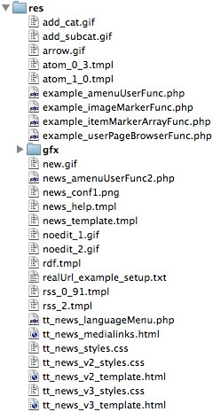
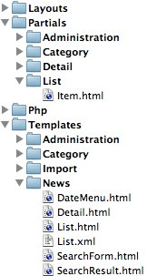
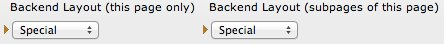

function displayList($excludeUids = 0) {
if ($this->debugTimes) {
$this->hObj->getParsetime(__METHOD__);
}
$theCode = $this->theCode;
$where = '';
$content = '';
switch ($theCode) {
case 'LATEST' :
$prefix_display = 'displayLatest';
$templateName = 'TEMPLATE_LATEST';
if (! $this->conf['displayArchivedInLatest']) {
// skipped 362 lines
return $content;
}
public function listAction() {
$this->view->assign('news', $this->newsRepository->findDemanded());
}
➜ dev cat tt_news/pi/class.tx_ttnews.php|wc -l
4158
➜ dev cat news/Classes/Controller/NewsController.php|wc -l
324
more code in general, but less code in the controller
if (is_array($GLOBALS['TYPO3_CONF_VARS']['EXTCONF']['tt_news']['additionalFormSearchFields'])) {
foreach ($GLOBALS['TYPO3_CONF_VARS']['EXTCONF']['tt_news']['additionalFormSearchFields'] as $_classRef) {
$_procObj = & t3lib_div::getUserObj($_classRef);
$searchMarkers = $_procObj->additionalFormSearchFields($this, $searchMarkers);
}
}
$this->signalSlotDispatcher->dispatch(
'TYPO3\\CMS\\Core\\Resource\\ResourceStorage',
self::SIGNAL_PreFileCopy,
array($file, $targetFolder)
);
$this->objectManager->get('\TYPO3\CMS\About\Domain\Repository\ExtensionRepository')$this->objectManager->get('\Lightwerk\Rest\DataProvider\DataProviderInterface')/** * @var \Lightwerk\Rest\DataProvider\DataProviderInterface * @inject */ protected $dataProvider;
$res = $GLOBALS['TYPO3_DB']->exec_SELECTgetRows(
'*',
'tx_myext_foo',
'title = \'' . t3lib_div::_GP('title') . '\''
);$this->FooRepository->findByName($name);
if (empty($email)) {
$error[] = $this->pi_getLL('error_mail_empty');
}
if (empty($pin)) {
$error[] = $this->pi_getLL('error_pin_empty');
} elseif (!is_int($pin)) {
$error[] = $this->pi_getLL('error_pin_integer');
}
/** * @var string * @Validate NotEmpty * @Validate EmailAddress */ protected $email;
<!-- ###CONTENT### begin This is the part of the template substituted with the list of news: --> <!-- ###NEWS### begin Template for a single item --> <div class="news-latest-item"> <span class="news-latest-date">###NEWS_DATE### ###NEWS_TIME###</span> <h2><!--###LINK_ITEM###-->###NEWS_TITLE###<!--###LINK_ITEM###--></h2> <!--###LINK_ITEM###-->###NEWS_IMAGE###<!--###LINK_ITEM###--> <!--###LINK_ITEM###-->###NEWS_SUBHEADER###<!--###LINK_ITEM###--><hr class="clearer" /> ###CATWRAP_B### ###TEXT_CAT_LATEST### ###NEWS_CATEGORY### ###NEWS_CATEGORY_IMAGE### ###CATWRAP_E### </div> <!-- ###NEWS### end--> <!-- ###CONTENT### end -->
<f:for each="{news}" as="newsItem">
<f:render partial="List/Item" arguments="{newsItem: newsItem, settings:settings}" />
</f:for>
$markerArray = $this->getXmlHeader();
$subpartArray['###HEADER###'] = $this->cObj->substituteMarkerArray($this->getNewsSubpart($t['total'], '###HEADER###'), $markerArray);
$t['total'] = $this->cObj->substituteMarkerArray($t['total'], array(
'###XML_DECLARATION###' => $markerArray['###XML_DECLARATION###']));
$t['total'] = $this->cObj->substituteMarkerArray($t['total'], array('###SITE_LANG###' => $markerArray['###SITE_LANG###']));
$t['total'] = $this->cObj->substituteSubpart($t['total'], '###HEADER###', $subpartArray['###HEADER###'], 0);
$t['total'] = $this->cObj->substituteSubpart($t['total'], '###CONTENT###', '', 0);
public function listAction() {
$this->view->assign('news', $this->newsRepository->findDemanded());
}
$linkWrap = explode(
$this->token,
$this->pi_linkTP_keepPIvars(
$this->token,
$piVarsArray,
$this->allowCaching,
$this->conf['dontUseBackPid'],
$singlePid)
);
<f:link.action action="show" arguments="{news: news}">more ...</f:link.action>
|  | vs. |  |
<table width="100%"> <tr> <td colspan="2" style="border: 1px solid #ccc;"> <f:cObject typoscriptObjectPath="lib.headerColumn" /> </td> </tr> <tr> <td width="66%" style="border: 1px solid #ccc;"> <f:cObject typoscriptObjectPath="lib.mainColumn" /> </td> <td width="*" style="border: 1px solid #ccc;"> <f:cObject typoscriptObjectPath="lib.sidebarColumn" /> </td> </tr> </table>
lib.headerColumn < styles.content.getLeft
lib.mainColumn < styles.content.get
lib.sidebarColumn < styles.content.getRight
page = PAGE
page.10 = FLUIDTEMPLATE
page.10 {
file.stdWrap.cObject = CASE
file.stdWrap.cObject {
# slide the template
key.data = levelfield:-1, backend_layout_next_level, slide
key.override.field = backend_layout
# default template file
default = TEXT
default.value = fileadmin/templates/Index.html
# template file for backend-layout with ID 2
2 = TEXT
2.value = fileadmin/templates/Special.html
}
partialRootPath = fileadmin/templates/Partials/
layoutRootPath = fileadmin/templates/Layouts/
}

namespace TYPO3\CMS\About\Controller;
class AboutController extends \TYPO3\CMS\Extbase\Mvc\Controller\ActionController {
➜ ~ ssh web.vm Linux web 3.2.0-4-amd64 #1 SMP Debian 3.2.41-2 x86_64 You have new mail. foertel@web:~$ cd /var/www/b foertel@web:/var/www/b$ git pull remote: Counting objects: 35, done. remote: Compressing objects: 100% (29/29), done. remote: Total 35 (delta 10), reused 0 (delta 0) Receiving objects: 100% (35/35), 22.56 KiB, done. Resolving deltas: 100% (10/10), done. foertel@web:/var/www/b$ git tag -am 'release 1.0.1' release-1.0.1 foertel@web:/var/www/b$ git push --tags foertel@web:/var/www/b$ cd .. foertel@web:/var/www$ unlink htdocs && ln -s b/ htdocs
<?php
$nodes = array(
array('identifier' => 'fe-node1', 'hostname' => 'www1.lightwerk.com'),
array('identifier' => 'fe-node2', 'hostname' => 'www2.lightwerk.com'),
array('identifier' => 'fe-node3', 'hostname' => 'www3.lightwerk.com'),
array('identifier' => 'fe-node4', 'hostname' => 'www4.lightwerk.com'),
array('identifier' => 'fe-node5', 'hostname' => 'www5.lightwerk.com'),
array('identifier' => 'fe-node5', 'hostname' => 'www6.lightwerk.com'),
);
$application = new \Lightwerk\Surf\Application\TYPO3\CMS();
$application->setDeploymentPath('/var/www/website/www/htdocs');
$application->setReleasesDirectory('');
$application->setContext('Production');
$application->setOption('repositoryUrl', 'git@git.lightwerk.com:internal/website.git');
foreach ($nodes as $node) {
$application->addNode(new \TYPO3\Surf\Domain\Model\Node($node['identifier'])->setHostname($node['hostname']));
}
$workflow = new \TYPO3\Surf\Domain\Model\SimpleWorkflow();
$deployment->setWorkflow($workflow);
$deployment->addApplication($application);
?>
/**
* @param \TYPO3\Surf\Domain\Model\Node $node
* @param \TYPO3\Surf\Domain\Model\Application $application
* @param \TYPO3\Surf\Domain\Model\Deployment $deployment
* @param array $options
* @return void
*/
public function execute(Node $node, Application $application, Deployment $deployment, array $options = array()) {
$context = $application->getContext();
$commands = array(
"cd " . $application->getDeploymentPath() . $application->getReleasesDirectory(),
"export TYPO3_CONTEXT=" . $context . " && ./typo3/cli_dispatch.phpsh coreapi cache:clearallcaches",
"export TYPO3_CONTEXT=" . $context . " && ./typo3/cli_dispatch.phpsh coreapi cache:clearconfigurationcache"
);
$this->shell->executeOrSimulate($commands, $node, $deployment);
}
Check out github.com:lightwerk/Lightwerk.Surf for the TYPO3 CMS specific tasks and workflows.
<?xml version="1.0" encoding="utf-8" standalone="yes" ?> <T3locallang> <meta type="array"> <type>module</type> <description>Language labels for the blog_example extension</description> </meta> <data type="array"> <languageKey index="default" type="array"> <label index="back">back</label> </languageKey> <languageKey index="de" type="array"> <label index="back">Zurück</label> </languageKey> </data> </T3locallang>
<?xml version="1.0" encoding="UTF-8"?> <xliff version="1.0"> <file source-language="en" datatype="plaintext" original="messages" date="2011-10-17T20:22:37Z" product-name="wizard_sortpages"> <header/> <body> <trans-unit id="wiz_sort" xml:space="preserve"> <source>Sort pages</source> </trans-unit> </body> </file> </xliff>
{kind=link}
{kind=link}